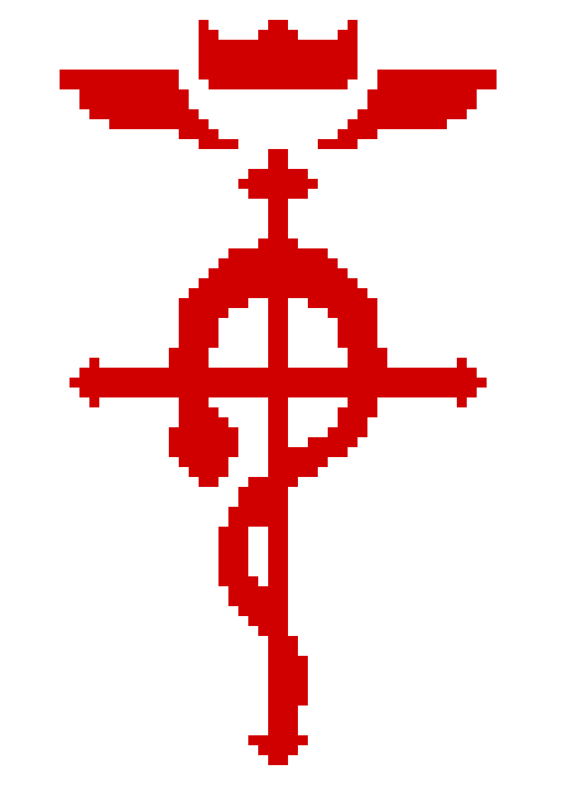

☾₊‧⁺ 𝙿𝚘𝚍𝚎 𝚖𝚎 𝚌𝚑𝚊𝚖𝚊𝚛 𝚍𝚎 𝙺𝚊𝚕𝚕𝚎𝚗
Eu sou Ethical Hacker, Dev Python, Designer.
Atualmente tenho 22 anos e estou vivendo em /etc/kallen
𝙬𝙝𝙤 𝙞 𝙖𝙢 ?
Eu sou especialista em OSINT, Engenharia social e CyberSegurança.
Atualmente estudando Analise Forense, Machine Learning e Programação.
Linux enthusiast, GameDev, insomnia.
Ajudo em Operações Cibernéticas e Investigações Cibernéticas.
Ajudo Orgãos Governamentais e empresas contra ataques cibernéticos,
que são: um risco tanto para seus usuários, quanto para seu negócio.
𝑺𝒐𝒄𝒊𝒂𝒍 𝑴𝒆𝒅𝒊𝒂
 Instagram
Instagram  Github
Github
